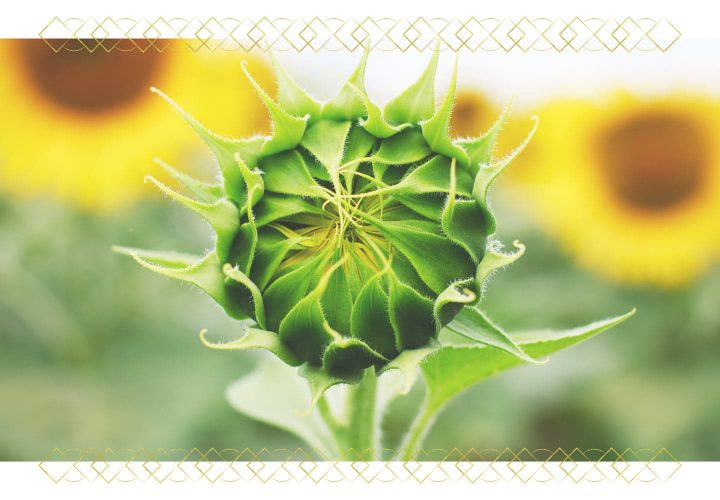
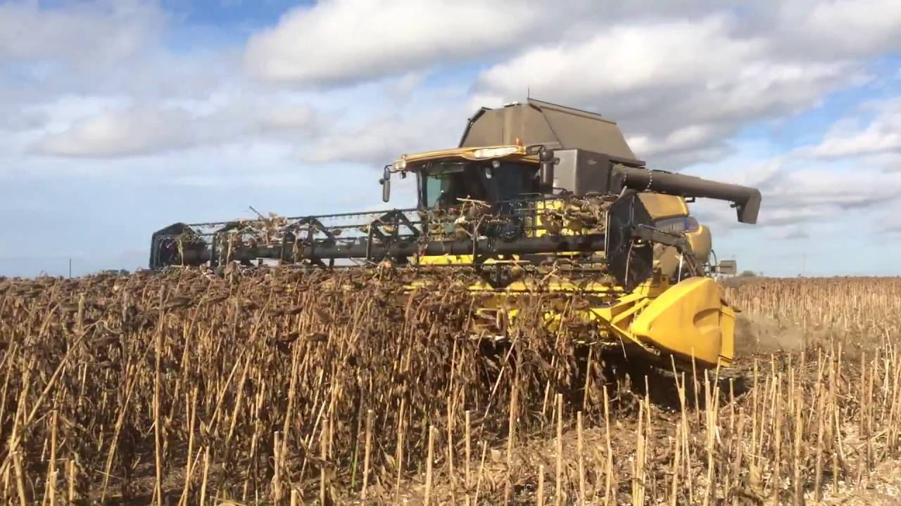

Paddy
Paddy cultivation is a very water intensive and laborious job. Paddy crop can be cultivated in different methods with different level of water and labour requirement. If you want to do rice cultivation then, here we go.....
Preparation of Field:
- Paddy farmers used to get their fields ready before the rainy season.
- The weeds are cleared and the field is ploughed by buffaloes or tractors to a depth of few inches.
- Manures and fertilizers are added to the soil.
- The whole surface then remained covered with water of about 2.5 cm.
- The field is then ready for receiving seedlings from the nursery.
Transplantation:
Generally paddy seedlings are first prepared in nursery and then transplanting is done in the field after about 40 days.Although in some areas of India and Sri Lanka seeds have been sown directly in the field and the seedlings sprout when the rain comes. But yield of paddy from transplanting is greater than the direct sowing.
The transplanted paddy also grows faster because of regular spacing and matures within a shorter period.
Field Maintenance:
Paddy fields also require regular maintenance, such as occasional weeding and thinning out the more crowded patches, level of water is to be maintained according to the growth and the fields are drained dry before the crop is harvested.Harvesting:
The traditional harvesting system is either through a curved knife or a sharp-edged knife.It is very labour-intensive. Harvesting is done in the dry season, when the weather is sunny. Mechanical combines which cut and thresh are used in Japan.
Threshing, Winnowing and Milling:
After the paddy stalks have been gathered and dried for a brief spell, their threshing is usually done. By beating the sheaves against the bars, the grains are separated from the stalks. Now threshing machines have also been developed.Winnowing is a process of removing the unwanted particles from the paddy grains. The simplest way is by pouring the paddy down from a height on a windy day to a large square mat on open ground. The grains fall to the mat while lighter chaff blows out. Sometimes hand-winnowing machines are also used.
Milling means removal of the yellowish husks from paddy so that white or polished rice is obtained. In a rice mill the paddy is made to pass between varying sets of huller or rollers till it is milled or polished. Although, there are several varieties of rice, but on the basis of their location two varieties have been identified. These are: (i) upland rice, which is grown on upland areas; and (ii) lowland rice, which grows in low lying and marshy areas.
Sugarcane
Growth Stages of Sugarcane, a C4 plant, is considered as one of the most efficient convertors of solar energy.
It has five growth phases- Germination Phase
- When cultivated commercially, sugarcane is propagated only vegetatively by stem parts (Cuttings) or by whole stems.
- Seed propagation is employed only in selection.
- Planting cuttings should have at least three buds.
- The sprouting phase (the beginning is marked by 10% and the complete stage by 75% pf sprouts) is thought to commerce when two leaves appear on the stem.
Tillering Phase
- Tillering of sugarcane in the tropics begins soon (in about 15-20 days) after the first sprouts appear.
- The secondary sprouts are formed from underground buds.
- In early ripening varieties of sugarcane, tillering lasts for 4-6 months, and finishes after the row contact.
- In the late-ripening varieties of sugarcane, tillering lasts long as 6-8 months.
- Every new sprout appears in 2 to 4 days.
- Under field cultivation each plant develops :
- In the strong-bushy varieties 20 to 40 sprouts.
- In medium-bushy 15 to 25 sprouts.
- And in weakly-bushy 8 to 12 sprouts.
Grand Growth Phase
This stage lasts for 5 to 8 months. Sugarcane plants normally vegetate at this stage, if properly supplied with heat and moisture.- Grand growth phase starts from 120 days after planting and lasts up to 270 days in a 12-month crop. During the early period of this phase tiller stabilization takes place. Out of the total tillers produced only 40-50% survives by 150 days to form millable cane.
- Most important phase of the crop wherein the actual cane formation and elongation and thus yield build up takes place.
- Leaf production is frequent and rapid during this phase with LAI reaching around 6-7.
- Under favourable conditions stalks grow rapidly almost 4-5 internodes per month.
Maturation and Ripening
- This phase lasts for about three months.
- Its maturation is determined by a definite sucrose level in the stems (up to 14-16% stem mass) and a low level of reducing sugars.
- The commercial ripening of stems can be identified quite reliably by the ratio of refractometry indices of juice taken from the seventh-eighth internodes and lower (0.95-0.98). In tropics, by harvesting time the sugarcane stems accumulate on the average up to 14-16% sugar; in subtropics 8-12% sugar.
Maize
Globally known as the ‘queen of cereals’, maize ranks third as an important food crop of India.
It is a versatile crop, can grow under a wide variety of geographical conditions.
It can also be cultivated throughout the year.The most maize producing states in India are Karnataka, Andhra, Bihar, Maharashtra, Himachal Pradesh, Uttar Pradesh and Rajasthan. Although it is used as a staple food, it also serves as a basic raw material for proteins, starch, oil, alcoholic beverages, cosmetics, gum, paper and packaging industry, etc.
Cultivation Process
Land Tilling and Ploughing
- Since maize requires highly fertile and tilled soil for cultivation, the field is ploughed numerous times. This step is typically carried out during the months of April- May if the monsoons begin in June and in June-July for the late season crop which is during the months of September to October.
- The soil dods are broken down, stubble, weeds and volunteer plants (plants remaining from the previous harvest) are removed and burnt. The soil must be prepared into a fine tilth or powder.
- Post this primary ploughing, the land is harrowed and levelled properly.

Manuring
- Once the ground is levelled, the organic manure like cattle manure is added, ploughed and harrowed again. 7-8 tons of manure per acre is required.
- Coir pith and Azospirillum can be used in lieu of cattle and farm yard manure.
Preparation
- For garden cultivation of maize, the plot is prepared in the form of beds. Shallow furrows are dug at a distance of 40 to 50 cm for sowing. The beds must be suited for irrigation facilities.
- In case there is an additional crop to be planted along with maize, then the spacing is made wider. The furrows are dug at a distance of 50- 60 cm in case of field cultivation.

sowing
- There are three distinct seasons for the cultivation of maize: the main season is kharif; whereas its cultivation during Rabi in Peninsular India and Bihar and in spring in northern India is done.
- Higher yields have been recorded in the Rabi and spring crops. The higher yields are primarily due to better water management and the lower incidence of disease and pests.
- Maize is sown in rows, 60-75 cm apart, whereas the plants in the row are spaced at 20 to 25 cm. A population of 60-75 thousand plants per hectare at harvest are required for obtaining the optimum yield.
- Sowing in rows is generally done with drill or by dropping the seed behind the plough. The practice of broading, particularly under rain fed conditions and for fodder maize is still prevalent in several parts of country. Seventeen to 20 kg of seed for the grain crop and 35-40 kg per hectare for the fodder crop is needed
In most parts of India, maize during kharif is sown with the break of monsoon, the actual dates varying from region to region. It is sown in early March in north eastern hills, in April to early May in north western hills, in May June in Peninsular India, in the end of June to mid July in the Indo Gangetic Plains. The late sowing of maize may extend upto late August in certain irrigated tracts of Punjab. Spring maize is sown in late January to the end of February in Bihar, Andhra Pradesh, Tamil Nadu and Karnataka in the end of October to mid November. Both the spring and the Rabi crops are raised, more or less, under irrigation
Sowing made a week tomten days before the usual break of monsoon, with initial one or two irrigations, provide a better chance for the establishment of plants, and yield increases of 15-20 per cent have also been recorded.
Harvesting
- The maize crop sown for grain is harvested when the grains are nearly dry and do not contain more than 20 per cent moisture. The appearance of the plant may be misleading, particularly in the case of high yielding hybrids and composites whose grains are dry, while the stalk and leaves may be still green
- Ears are removed from the standing crop. Harvested ears are dried in the sun before shelling. In the case of the late-sown crop, farmers prefer to harvest the whole plants and pile them, and the ears are removed are removed later. Maize stalks are used as cattle feed or fuel. In fact, no part of the maize plant, even the cobs from which the grains have been removed, is left unused.
- Maize grown for fodder should be harvested at the milk to early dough stage; the earlier harvested crop is likely to yield less and have a lower protein content. For silage, however, the late dough is preferred
- Both power and hand operated low priced maize shellers are available indigenously. These shellers are considerably more efficient than hand shelling or beating with sticks, the common practice in northern India.
- Farmers using hybrid maize should not save their own seed for their next crop, as the advanced generation hybrid seeds are likely to yield reduction of 25-30 per cent. However, can save seed from composites and open pollinated varieties, when grown in isolation.
- At least seeds from 500 to 100 ears of the best yielding and normally spaced plants resistant to prevalent diseases and pests should be bulked. Ears should be dried, shelled and treated with an insecticide and the treated seed is necessary, as the untreated seeds on ears are times badly attacked by stored grain pests and the germination is markedly reduced.
- Considerable variation in grain yield is observed. The yield levels depend upon the variety, the amount of the fertilizer used, and the rainfall pattern etc.
- Under irrigated conditions and recommended cultural practices, an average yield of 4 tonnes per hectare in the Indo-Gangetic Plains is not uncommon; in peninsular India and at higher elevations, a mean yield of 5-7 tonnes per hectare has frequently been obtained.
- Under low fertility and rainfed conditions with poor yielding varieties, a grain yield of about on to two tonnes/ha is obtained.
Cotton
Cotton Varieties
Many people don’t realize that cotton comes in a variety of colors. White cotton used to be the standard for commercial growers. Today’s cotton is often bleached to bring out a uniform color.
In the past, brown cotton was commonly grown for personal use by slaves and poor whites. However, pink, green, blue, and yellow have all been popular at one time or another.
Many of these colors were developed by slaves and black freedmen because they were not allowed to grow the “white” cotton of their masters. Colored cotton varieties weren’t as favored because they have shorter plant fibers, which are harder to spin and dye.
Arkansas Green Lint Cotton
Erlene’s Green Cotton
Mississippi Brown Cotton
Nankeen Cotton
Red Foliated White Cotton
This variety produces yellow-pink flowers that make nice cut bouquets. The cotton is a light green and has short fibers with dark green seeds. It takes 135 days to mature.
Another green variety that is known for its ease of spinning. After washing, the fibers take on a more yellowish-green color. Tall plants grow to five feet high and take 130 days to mature.
This variety makes history come alive. It’s a cultivar that was once favored by slaves and makes a wonderful yarn. Plants grow five feet tall and are extremely drought tolerant. The cotton color ranges from light tan to a rich golden brown. This type matures in 130 days.
Nankeen is the king of heirloom cottons. It was grown during the Civil War. It appears as a natural brown color on the plant, but the lint becomes copper colored when washed. Nankeen is a hardy, insect resistant variety that will do well in poor soil and drought-prone areas.
This is a great variety to grow in containers or a flower bed. It has striking red leaves and stems that pair well with beautiful yellow and white flowers. A bit smaller, this one grows three to five feet tall. The cotton is a naturally bright white color. It matures in 120 days.
Planting Cotton
Sowing Cotton
Soil Requirements
Growing in Containers
Spacing
Watering
Fertilizing
Mulching
Cotton is a warm-weather annual that needs a long growing season. You can sow it directly in the ground if you live in zones 8-10.
In zones 5-7 treat cotton as you would tomato plants. Seed them inside in a high-quality seedling mixture in a warm room with plant lights about six weeks before last expected frost. Plant two seeds per peat cup. Plant seeds one inch deep. Thin seeds to one per pot.
Cotton germinates best in temperatures between 75-80°F. The seeds take about two weeks to germinate, so don’t get impatient.
Cotton prefers loose earth, but many varieties will grow in compact, drier soil. Cotton can handle sandy, loamy, and clay types equally well. Plants prefer a pH between 5.5-8.5, and well-drained, rich earth. Add a generous amount of compost to the first several inches of soil before planting.
You can also grow cotton indoors as a houseplant because it does well in containers. You’ll need to give it supplemental light if you want it to be productive.
You can also grow cotton outside in containers. Make sure you use a larger pot, such as the size used for trees.
If you are planting directly in the soil, plant seeds about four inches apart and rows about 30 inches apart. Cotton is self-pollinating, so that makes it easy to grow a small garden.
Keep your growing cotton plants moist but not wet. Too much water makes them prone to rot diseases. Water is especially important during the time the boll is developing.
Cotton is a heavy feeder and needs nitrogen and potash. It also appreciates an organic fertilizer such as fish emulsion. Organic fertilizers developed for tomatoes are well suited to your cotton plants.
Cotton benefits from a thick application of mulch. Straw is best as it retains moisture but allows for air circulation.
Sunflower
HOW LONG DO SUNFLOWERS TAKE TO BLOOM?
A fairly fast-growing flower, most sunflower varieties mature in only 85 to 95 days. The largest sunflower varieties grow to over 16 feet in height, while smaller varieties have been developed for small spaces and containers and rarely grow larger than a foot tall! The flower heads can can reach over 12 inches in diameter within the large seeded varieties.
Sunflowers are heliotropic, which means that they turn their flowers to follow the movement of the Sun across the sky east to west, and then returns at night to face the east, ready again for the morning sun. Heliotropism happens during the earlier stages before the flower grows heavy with seeds
Very few plants are as heat-tolerant, resistant to pests, and simply beautiful. Sunflowers make excellent cut flowers and many are attractive to bees and birds.
At the end of the season, it’s easy to harvest sunflower seeds for a tasty snack or for replanting (see instructions below). Learn more about why you should start growing these happy flowers in your garden.
PLANTING
WHEN TO PLANT SUNFLOWERS
- It’s best to sow sunflower seeds directly into the garden (or outdoor containers) after the danger of spring frost has passed anytime after soils have warmed to 50°F.
- In most regions, this will fall between April and mid-July. In the south, this will probably occur in mid-March or early April.
CHOOSING & PREPARING A PLANTING SITE
- Find a sunny spot! Sunflowers grow best in locations with direct sunlight (6 to 8 hours per day) they require long, hot summers to flower well. Choose a location with well-draining soil. It shouldn’t pool water after it rains. 
- Sunflowers aren’t picky but the soil can’t be too compact. They have long tap roots that need to stretch out; in preparing a bed, dig down 2 feet in depth and about 3 feet across.
- They’re not too fussy when it comes to soil pH either. Sunflowers thrive in slightly acidic to somewhat alkaline soil (pH 6.0 to 7.5).
- Sunflowers are heavy feeders, so the soil needs to be nutrient-rich with organic matter or composted (aged) manure. Or, work in a slow release granular fertilizer 8 inches deep into your soil.
- If possible, plant sunflowers in a spot that is sheltered from strong winds, perhaps along a fence or near a building. Larger varieties may become top-heavy and a strong wind can be devastating.
- Before planting, decide whether or not you want to grow a fun sunflower tower.
PLANTING SUNFLOWER SEEDS
Sunflowers should be planted 1 to 1-½ inches deep and about 6 inches apart after the soil has thoroughly warmed. If you wish, you can plant multiple seeds and thin them to the strongest contenders when the plants are six inches tall.
Give plants plenty of room, especially for low-growing varieties that will branch out. Make rows about 30 inches apart. (For very small varieties, plant closer together).
A light application of fertilizer mixed in at planting time will encourage strong root growth to protect them from blowing over in the wind.
Experiment with plantings staggered over 5 to 6 weeks to keep enjoying continuous blooms.
If you see birds scratching around for the seeds, spread netting over the planted area until seeds germinate. See more ways to keep birds away from your garden.
CARE
CARING FOR SUNFLOWERS

- While the plant is small, water around the root zone, about 3 to 4 inches from the plant. To protect the plant, it may help to put snail or slug bait around the stem.
- Once the plant is established, water deeply though infrequently to encourage deep rooting. Unless the weather is exceptionally wet or dry, water once a week with several gallons of water.
- Feed plants only sparingly; overfertilization can cause stems to break in the fall. You can add diluted fertilizer into the water, though avoid getting the fertilizer near the plant’s base; it may help to build a moat in a circle around the plant about 18 inches out.
- Tall species and cultivars require support. Bamboo stakes are a good choice for any plant that has a strong, single stem and needs support for a short period of time.
HARVEST/STORAGE
CUTTING SUNFLOWERS FOR BOUQUETS
- For indoor bouquets, cut the main stem just before its flower bud has a chance to open to encourage side blooms.
- Cut stems early in the morning. Harvesting flowers during middle of the day may lead to flower wilting.
- Handle sunflowers gently. The flowers should last at least a week in water at room temperature.
- Arrange sunflowers in tall containers that provide good support for their heavy heads, and change the water every day to keep them fresh.
HARVESTING SUNFLOWER SEEDS
- At the end of the season, harvest sunflower seeds for a tasty snack and or to replant or to feed the birds in the winter
- Let the flower dry on or off the stem until the back of the head turns brown, the foliage turns yellow, the petals die down, and the seeds look plump and somewhat loose.
- With sharp scissors or pruners, cut the head off the plant (about 6 inches below the flower head). Place in a container to catch loose seeds.
- Lie the sunflower head on a flat, clean surface and grab a bowl to hold the seeds.
- To remove the seeds, simply rub your hand over the seeded area and pull them off the plant or you can use a fork. Another way to remove them is to rub the head of the sunflower across an old washboard or something similar. Just grip the head and rub it across the board as if you were washing clothes. 
- If you are going to harvest the seeds for roasting, you can cover the flowers with a light fabric (such as cheesecloth) and a rubber band to protect the heads from the birds.
- Alternatively, you can cut the flower head early and hang the heads upside down until the seeds are dry; hang indoors or in a place that’s safe from birds and mice.
- Rinse sunflower seeds before laying out to dry for several hours or overnight.
- If you’re saving seeds to replant, store them in an airtight container in a cool, dry place until you are ready to plant.
Soya
Soybean is cultivated in warm and moist climate and grown in monsoon season from June to October. Temperature of 15 – 32°C is required for its germination.
Optimum temperature required for its growth and yield is 30 – 33°C. If temperature is below 10°C, crop growth is retarded.
Corn
Maize is sown in rows, 60-75 cm apart, whereas the plants in the row are spaced at 20 to 25 cm. A population of 60-75 thousand plants per hectare at harvest are required for obtaining the optimum yield. Seventeen to 20 kg of seed for the grain crop and 35-40 kg per hectare for the fodder crop is needed.
Wheat
Wheat is mainly a rabi (winter) season crop in India. Wheat is grown in a variety of soils of India. Soils with a clay loam or loam texture, good structure and moderate water holding capacity are ideal for wheat cultivation. Heavy soil with good drainage are suitable for wheat cultivation under dry conditions.
Turmeric
India is a leading producer and exporter of turmeric in the world. Andhra Pradesh, Tamil Nadu, Orissa, Karnataka, West Bengal, Gujarat, Meghalaya, Maharashtra, Assam are some of the important states cultivating turmeric, of which, Andhra Pradesh alone occupies 38.0% of area and 58.5% of production.